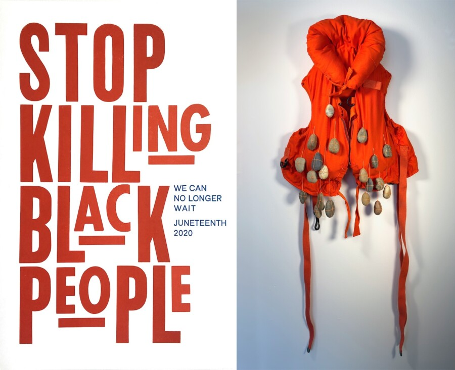

Ben Blount & Catherine Jacobi: Good Trouble
“Go out there, speak up, speak out. Get in the way. Get in good trouble, necessary trouble, and help redeem the soul of America.”1
U.S. Congressman and civil rights leader John Lewis spoke these words as he stood on the Edmund Pettus Bridge in Selma, Alabama in 2020 to commemorate the 55th Anniversary of the “Bloody Sunday” March. In 1965, he was among 600 peaceful protesters marching in reaction to the senseless murder of deacon Jimmie Lee Jackson by a state trooper. Tragically, Lewis and others were hospitalized due to injuries from law enforcement that day. By 2020, little progress had been made for civil liberties and racial equality. Now in 2026 those small advances are being threatened. As we bear witness to wars across the world, cruelty to immigrants and people of color in the United States, crime and poverty in our neighborhoods, and endangerment to human rights, we ask – What can we do? For artists Ben Blount and Catherine Jacobi, the answer is found in their art.
Ben Blount has been making statements about race and identity through his letterpress printing for decades. His process combines those of a sculptor constructing with three-dimensional elements as he moves blocks of wood and metal type; a designer laying out compositions of various shapes and space; and a painter layering colored inks as the paper is fed through his Vandercook No. 4 Proofing Press. He plays with hard edges and the spread of ink, transparent and solid saturations of color, and expected imperfections to give voice to his messages.
His prints can be bold and direct, as with Stop Killing Black People in honor of Juneteenth, along with Misty Copeland, Jane Bolin, Marian Anderson, and Amelia Boynton from the Black Women’s Wisdom series. The selection of font size and style combined with the strong red and blue inks stresses select words such as Kill, Belief, and Now – prompting a call to action. Blount’s prints can also be subtle, layered in meaning and composition as with his collaboration with ceramicist Joanna Kramer, inspired by the poetry in Olio, by Tyehimba Jess. The prints were pulled from textured slabs of clay and letterpress-printed with silver metallic ink, giving them a mysterious glowing presence.
Since the 6th century, with the invention of woodblock printing in China, and the 15th century, when Johannes Gutenberg introduced the movable type printing press, prints as a form of protest have engaged artists like Francisco Goya, László Moholy-Nagy, Nancy Spero, and the Guerilla Girls, to communicate ideas, to educate, and give a voice for others. Likewise, Ben Blount and Catherine Jacobi use the print to speak out and advocate for change. Blount’s book Dream Deferred, influenced by the Sears Wish Book and inspired by Langston Hughes’ poem “Harlem,” addresses the unattainability of the American Dream. Catherine Jacobi’s recent prints are renditions of famous masters, such as the etching Minneapolis/Guernica. Utilizing Pablo Picasso’s painting depicting the bombing of the Spanish town’s civilian population by Nazi Germany, Jacobi’s print equates those horrors with the recent violence inflicted upon the courageous Minnesota citizens by ICE agents.
Made from found objects, Catherine Jacobi’s sculptures give new meaning to everyday articles. Artists like Robert Rauschenberg, Tara Donovan, and Ai Weiwei have used art to transform items and express new concepts. Jacobi continues this genre by targeting topics surrounding her today.
Like Ben Blount, some pieces have direct meaning, as with REDHaT, while others are restrained like the solemn and chilling installation Gravity, consisting of bright red-orange children’s life jackets weighed down by rocks sewn on with string. Given the present-day news, one can connect this to the young lives lost in Gaza, Lebanon, Iran, and our own country, and to the abused girls documented in the Epstein files. Likewise, her series Heavy allows multiple interpretations. Made from reclaimed bicycle inner tubes, the layers of tightly wound rubber form the shape of a human heart. The airless black tubes convey the weight of our times.
Ben Blount’s print Make America Great might be misinterpreted to be in support of the current administration. However, if you literally read between the lines, the message is one of hope. Catherine Jacobi’s Make America Glean Again repurposes Jean-François Millet’s famous print of the back-breaking labor of gathering leftovers after the harvest – a commentary on the societal and financial pressures burdened on today’s American lower and middle classes. Both artists channel difficult and disturbing issues into their art, allowing us to process the information to shape our own thoughts. As they create good trouble, they prompt us to continue our necessary conversations and actions. –Joanne Aono, Curator